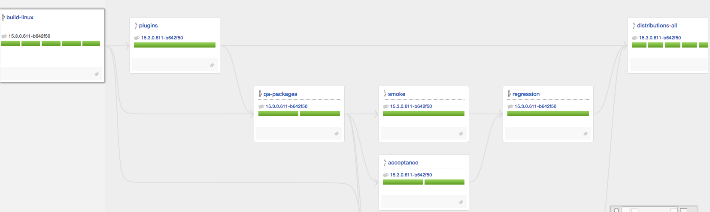
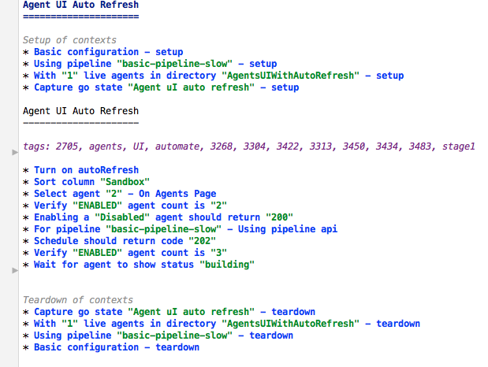
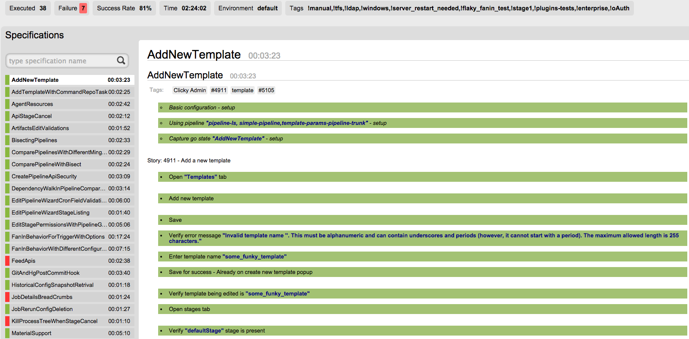

Why Open Source Tests
Testing open source projects has its own set of problems. Unit and integration tests are added by the contributors, however end to end tests are added later or neglected. There are several reasons for this like not being aware of the end to end flow, complexity of automating tests for end to end systems. However to be confident about a release we need end to end tests. To maintain the healthy balance defined by a test pyramid, every release must have its system test cases reviewed and maintained and this needs collaboration.
At GoCD we are finally open sourcing our functional tests, we believe open sourcing system tests will - improve quality through collaboration, make regression tests efficient, give the community a detailed picture of the system behavior and act as a live document for users.
How GoCD is continuously tested
Let’s take a brief tour of how GoCD does continuous testing. GoCD is built, tested and deployed using GoCD itself. Here’s a snapshot of the GoCD build pipeline.

GoCD is tested using “Server in-the-box” model. In this model we define the system under test - its scope and its boundaries. External dependencies for the system under test (SUT) say git or yum repo are stubbed out or built into the SUT itself. The pipeline “qa packages” does the necessary jobs to bundle the stub code with production code, and then pass on the packages to “smoke” and “acceptance” pipelines to run the tests. Upon successful runs of the upstream pipelines, “distributions-all” pipeline packages only the production code.
Test Classifications
Below are the set of functional test types modeled into the GoCD pipelines. Each of them are run on single or multiple agents as per the size of the tests. Every agent will be cleaned of any previous versions of the build when a new build is started.
-
Smoke: As per the classic definition “smoke tests” validates the basic functionality of the system under test. It runs on 2 GoCD server agents - one on windows and one on linux
-
Acceptance: These tests validates the necessary set of tests for each functionality or use case flow. It does not execute every scenario in the flow, but validates all possible flows. These tests are run on a total of 17 agents. Smoke and Acceptance are triggered by the upstream pipeline ‘qa packages”.
-
Regression: A detailed set of tests which is exhaustive and comprehensive. This job is executed parallel in 17 agents. Regression tests are triggered when Smoke and Acceptance pipelines pass.
-
Performance: This pipeline is under development, will discuss this on a separate blog
How this model helps continuous delivery
Continuous delivery depends on a faster feedback loop. However Functional and Performance tests end up being bottlenecks. This can be reduced to a great extent by distributed tests.
Though not the only solution, it's a first step to achieving the faster feedback loop. Further enhancements and optimizations are on the way.
Twist to Gauge Migration
GoCD functional tests were initially developed using ThoughtWorks Twist automation tool. Since Twist has hit end-of-life as a product and is being replaced by Gauge, we’ve migrated our tests to Gauge. Moving to Gauge now helps us open source these tests (Twist was a commercial product).
Twist to Gauge migration is handled by the migration plugin bundled in Twist.
Gauge Specifications
Gauge specifications are in markdown language making it more readable. Gauge specs intend to be live documents of the system behavior

Gauge Reports
Gauge produces reports in an easily readable format and provides specification execution details like steps executed, time for each spec execution, overall test execution time, steps and specs passed, what failed and the screen shot of the failure page.

Conclusion
A distributed test environment and parallel execution are ways to support CD, by making long running tests short and getting faster feedback. Here we have addressed functional tests, we will soon be working on the performance tests.
If you would like to contribute to GoCD tests, please visit GoCD Functional Tests for contribution.